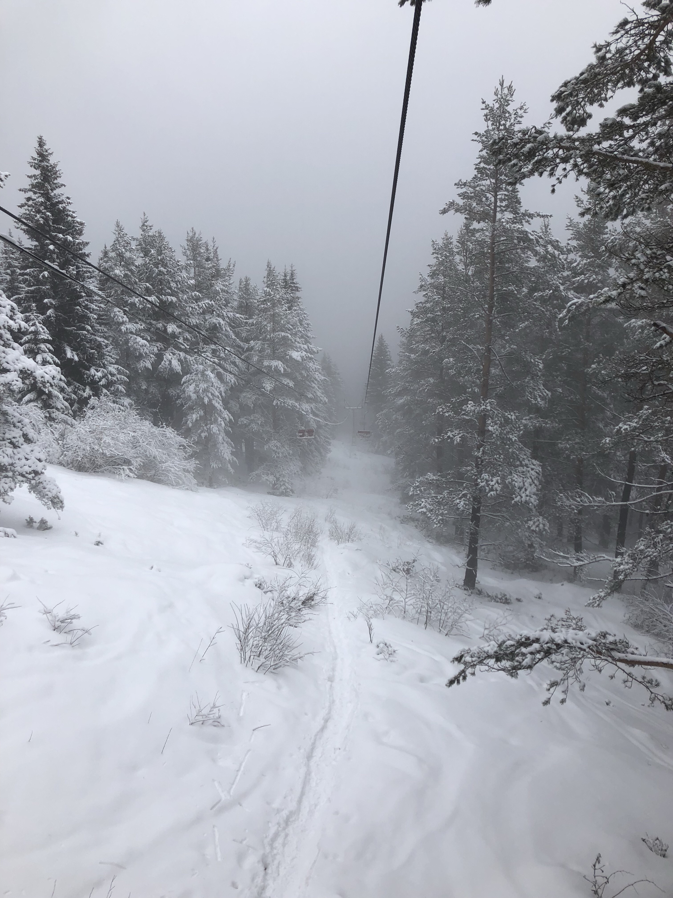
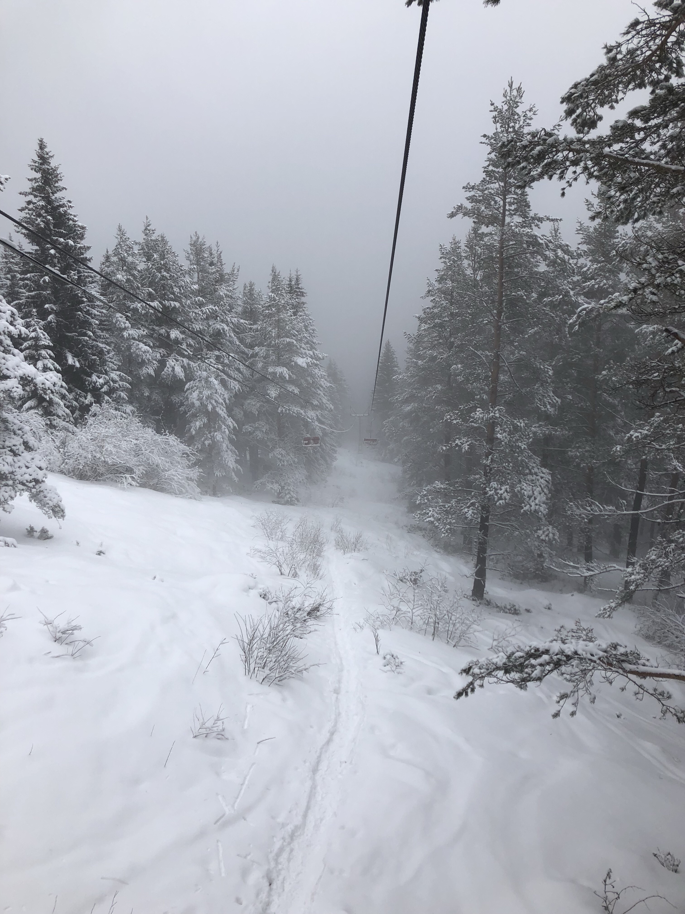

Ok, I'm going to kick some life back into this blog with a post about my recent travels to Bulgaria. After this, I plan to be writing one post per week and I'm going to do my best stick to that this time!
First of all, Bulgaria was an entirely random choice of destination. Back in November, I was looking into
flights with my friend Ruth - who is on Erasmus in Nijmegen, Holland - and Sofia was a cheap option for both
of us to travel to AND by some stroke of luck our outbound and return flights were within half an hour of each other.

Fast-forward to late on Friday 2nd February and we were checking into our twin private room at Hostel Mostel, Sofia. Now before I say anything else, I have to say that if you ever find yourself in Sofia (and I would 100% recommend) then stay at Hostel Mostel. The staff are so helpful and friendly, you get breakfast AND dinner included, there are not one but two day trips organised by the hostel, and it's barely a ten minute walk from the city centre. Plus, being Bulgaria, it's super cheap for people earning in euros/pounds. We only paid around 35 euros in total (each) for a private room for 3 nights.
Saturday - after enjoying our free buffet breakfast we set out for one of those free walking tours you get in just about every major city in Europe, as I always find this the best place to start in any city. The tour was fantastic, and I learned a great deal about Bulgarian history. It hadn't quite clicked for me how close we were to Greece until I was told that Sofia was the oldest European city after Athens, and that every time they dug in the city to build things like the metro, they came across older and older Roman buildings dating back to the 4th century! There are also many (many) churches in Sofia and they even have the 'square of tolerance' which got its name because within it there is a Catholic cathedral, a mosque, a synagogue and an orthodox church. The tour concluded at the most famous church in Sofia, the Alexander Nevksy Cathedral.
Later on that day, we went to a restaurant that had been recommended to us called 'Moma'. Even the entrance to this restaurant was fancy as we walked under a romeo and juliet like balcony with roses on it. The food we had inside was some of the best food I've ever had, and included local red wine and a complimentary bowl of spices to dip bread in. After filling up on traditional food we headed out to one of the things we had pre-booked for during our stay which was the Swan-Lake ballet. Now, the tickets that I had booked a couple weeks before cost me 12 LEV each, which is the equivalent of £5! Granted, we didn't have the best seats in the house but the dancers were amazing!
After this we changed the scene a little, joined a bar crawl that had been organised by the one and only Hostel Mostel,
and ended up in a club of sorts that had a disco ball shaped like a rubber duck. We couldn't stay long though, as were
getting up early to head to a pre-booked tour in the mountains, or so we thought...

It's day 2 and we arrive at the designated meeting spot for our tour, where we meet a lovely Dutch girl about our age and her Mum who have also booked in for the same tour. 15/20 minutes go by without any sign of our guide so we give him a call and find out that the tour has been cancelled due to 'bad weather'. The weather was better than usual for the beginning of February. This was disappointing, but instead of giving up we decided to just get a taxi there on our own, since the base of the Vitosha mountain range is a mere 12 miles from the city centre. Hostel Mostel helped us out yet again by recommending a taxi app because there are a lot of scam taxis ready to rip off the tourists. We downloaded the app 'TaxiMe' which is essentially Bulgaria's version of uber. Not long after this we were preparing to get on an extremely old and dodgy looking chair lift.
The 'seat' was 2 rickety wooden chairs and it worked on a jump on/jump off system, the chairs themselves didn't stop
moving. Then began this magical ascent into the mountain which started off with a mostly brown forest and turned into
a narnian like land with deep snow and fog!

Once at the top we followed various trails, had some delicious traditional bean soup to warm us up, and laughed at the hole in the ground surrounded by a hut that was the only toilet. From what started out as a disappointment from a cancelled tour, ended up being such a fun day with the two others and it's one of those things that only happens when meeting other travelers.
You'd think we would have been tired come Monday morning and chilling out before our nighttime flights home - but no, we had signed up for one of the hostel's day trips to the Rila Monastery in the mountains, about a 2 hour drive from the hostel. We were in a car with 2 Brits and 2 Brazilians. Everyone was great chat and the 2 hours drive passed quickly, while our driver pointed out various things in the landscape on the way. Once we arrived we drove a little past the monastery, to a cave where the monk actually lived in solitude for many years. It was a long, slippery hike up and then we all crawled through this very small hole in the cave where he used to live.
After exploring the area and taking a lot of photos, we headed back to the monastery where we had an hour to look around and enjoy the sun before driving yet further down the hill to probably the only restaurant on the mountain before the 2 hours drive back.
We had just enough time for one last delicious dinner in another place recommended by the hostel called Divaka, before getting the metro directly to the airport. The two dutch people we had met on Sunday even happened to be on my flight back to Charleroi!
I would certainly love to go back to Bulgaria, but for now I have a few more trips coming up over the next few weeks, which should also help make my blog a little more interesting! Next Monday I will hopefully have time to write about this weekend's trip to Strasbourg!
À bientôt!
 
